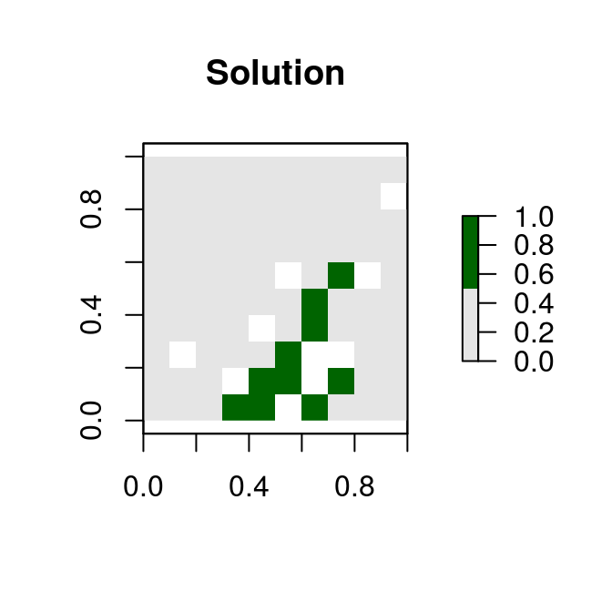

Gurobi Installation Guide
Richard Schuster
2020-05-13
Source:vignettes/gurobi_installation.Rmd
gurobi_installation.RmdIntroduction
Gurobi is the most powerful and fastest solver that the prioritizr R package can use to solve conservation planning problems. This vignette will walk you through the process of setting up Gurobi on your computer so that you can use it to solve conservation planning problems. If you encounter any problems while following the instructions below, check out the official Gurobi documentation.
Obtaining a license
Gurobi is a commercial computer program. This means that users will need to obtain a license for Gurobi before they can use it. Although academics can obtain a special license at no cost, individuals that are not affiliated with a recognized educational institution may need to purchase a license to use Gurobi. If you are an academic that is affiliated with an educational institution, you can take advantage of the special academic license to use Gurobi for no cost. Once you have signed up for a free account you can request a free academic license.
Once you accept the Terms Of Service you can generate a license.
Now, copy and save the grbgetkey XXXXXXXX-XXXX-XXXX-XXXX-XXXXXXXXXXXX command for later use.
Downloading the Gurobi software suite
After obtaining a license, you will need to download a copy of the Gurobi installer to your computer. To achieve this, visit the Gurobi downloads web page and download the correct version of the installer for your operating system.
Software installation
The installation process for the Gurobi software suite depends on the type of operating system you have installed on your computer. Fortunately, Gurobi provide platform-specific “Quick Start Guides” for Windows, Mac OSX, and Linux systems that should help with this. Briefly, on Windows systems, you just need to double-click on the Gurobi installer, follow the prompts, and the installer will take care of rest. Whereas, on Linux systems, you will need to manually extract the downloaded file’s contents to a folder, move the extracted contents to a suitable location (typically /opt/gurobi), and update your system’s variables so that it knows where to find Gurobi. Additionally, if you are using RStudio on a Linux system, you might need to add the following line to the file located at /etc/rstudio/rserver.conf:
rsession-ld-library-path=/opt/gurobi650/linux64/libAfter installing the Gurobi software suite on your computer, you will need to activate your license.
License activation
Now we will activate the Gurobi software using the license you downloaded earlier. Please note that the correct set of instructions depends on your system and license. In most cases, you should follow the instructions in the “Local license activation”. If, and only if, you are activating a special Academic license on a networked computer that is not connected to your university’s network (e.g. a cloud-based system), then please follow the instructions below in the “Cloud license activation over SSH” section.
Local license activation
To activate the license, simply copy and paste the grbgetkey command into your computer’s command prompt or terminal (note that Windows users can open the command prompt by typing cmd in the search box and pressing the enter key). After running the grbgetkey command with the correct license code, you should see output that looks something like that in the screen shot below.

Cloud license activation over SSH
If you are activating a special Academic license on a networked system that is not connected to your university’s network (e.g. a cloud-based server on Amazon EC2 or NeCTAR), then you will need to use the following instructions. Here, you will need a local computer that is connected to your university’s network. For brevity, we will refer to your local computer as COMPUTER1 and your networked system where upon you wish to activate the Gurobi license as COMPUTER2. We will also assume that your are running Ubuntu (14.04+) on both systems. The following instructions were adapted from a discussion thread on the official Gurobi emailing list.
First, we will connect to COMPUTER2 using COMPUTER1. Here, we will use USER.COMPUTER2 to refer to the user name of your account on COMPUTER2, and IP.COMPUTER2 to refer to the IP address of COMPUTER2. If you do not know the IP address of COMPUTER2, you should be able to find it on the website where you launched the system. To connect to COMPUTER2 from COMPUTER1, type the following command into a new terminal session. Note that you may be prompted to enter a password.
ssh USER.COMPUTER2@IP.COMPUTER2Next, we will install sshserver on COMPUTER2. To do this, enter the following command into the same terminal session.
sudo apt-get install openssh-serverNext, we will execute the following on command on COMPUTER2 to tell it to connect to COMPUTER1 when attempting to activate the Gurobi license. Similar to before, we will use USER.COMPUTER1 to refer to the user name of your account COMPUTER1, and IP.COMPUTER1 to refer to the IP address of COMPUTER1. If you do not know the IP address of COMPUTER1, try visiting this website (https://whatismyipaddress.com) to find out what it is. Also note that your university might automatically block incoming SSH connections, so if you are unable to connect to COMPUTER1 from COMPUTER2 you may need to enlist the help of a member of your university’s IT support team.
ssh -L 8080:apps.gurobi.com:80 USER.COMPUTER1@IP.COMPUTER1Now, we will open up another session on COMPUTER1, connect to COMPUTER2 from COMPUTER1 using the same SSH command as before, and then tell COMPUTER2 to activate the license. Please replace XXXXXXXX-XXXX-XXXX-XXXX-XXXXXXXXXXXX with the correct license activation code that you saved earlier (note that the --http flag may not be required for Gurobi versions earlier than 8.0.0).
ssh USER.COMPUTER2@IP.COMPUTER2
grbgetkey --http --server=127.0.0.1 --port=8080 --verbose XXXXXXXX-XXXX-XXXX-XXXX-XXXXXXXXXXXXFinally, after having activated the license, we can terminate our SSH connections and close the bash sessions.
Verification
We can double check that the license has been successfully activated by running Gurobi from the command line. Assuming you have installed Gurobi version 8.0.0, Windows users can type in the following the following commands:
gurobi_cl c:\gurobi800\win64\examples\data\coins.lpAdditionally, Linux users can test their license activation using the following commands
gurobi_cl /opt/gurobi800/linux64/examples/data/coins.lpIf the license was successfully activated, you should see output that looks something like that in the screen shot below.
After activating the license, you now need to install the Gurobi R package named gurobi.
R package installation
Now we will install the gurobi R package distributed with the Gurobi software suite. The gurobi R package installation file should be located within the folder where you installed the Gurobi software suite. Assuming you installed Gurobi in the default location and assuming you installed version 8.0.0, Windows users can install gurobi R package by running the following code from within R:
install.packages("c:/gurobi800/win64/R/gurobi_8.0-0.zip", repos = NULL)Additionally, Linux users can install the gurobi R package by running the following code from within R:
install.packages(file.path(Sys.getenv("GUROBI_HOME"),
"R/gurobi_8.0-0_R_x86_64-pc-linux-gnu.tar.gz"),
repos = NULL)Next, you will need to install the slam R package because the gurobi R package needs this package to work. Both Windows and Linux users can do this by running the code below in R:
install.packages("slam", repos = "https://cloud.r-project.org")Let’s check that the gurobi R package has been successfully installed. To do this, we can try using the gurobi R package to solve an optimization problem. Copy and paste the R code below into R.
# load gurobi package
library(gurobi)## Loading required package: slam# create optimization problem
model <- list()
model$obj <- c(1, 1, 2)
model$modelsense <- "max"
model$rhs <- c(4, 1)
model$sense <- c("<", ">")
model$vtype <- "B"
model$A <- matrix(c(1, 2, 3, 1, 1, 0), nrow = 2, ncol = 3,
byrow = TRUE)
# solve the optimization problem using Gurobi
result <- gurobi(model, list())## Gurobi Optimizer version 9.0.1 build v9.0.1rc0 (linux64)
## Optimize a model with 2 rows, 3 columns and 5 nonzeros
## Model fingerprint: 0x15e5f516
## Variable types: 0 continuous, 3 integer (3 binary)
## Coefficient statistics:
## Matrix range [1e+00, 3e+00]
## Objective range [1e+00, 2e+00]
## Bounds range [0e+00, 0e+00]
## RHS range [1e+00, 4e+00]
## Found heuristic solution: objective 2.0000000
## Presolve removed 2 rows and 3 columns
## Presolve time: 0.00s
## Presolve: All rows and columns removed
##
## Explored 0 nodes (0 simplex iterations) in 0.00 seconds
## Thread count was 1 (of 4 available processors)
##
## Solution count 2: 3
##
## Optimal solution found (tolerance 1.00e-04)
## Best objective 3.000000000000e+00, best bound 3.000000000000e+00, gap 0.0000%# print the solution
print(result$objval) # objective## [1] 3print(result$x) # decision variables## [1] 1 0 1If you see the outputs for result$objval and result$x and you don’t see any error messages, then you have (1) successfully installed the Gurobi software suite, (2) activated a valid license, and (3) successfully installed the gurobi R package. Now you can finally use Gurobi to solve conservation planning problems with prioritizr. If do see an error message, then you might have missed a step while installing the package or activating the license, so try going back through this vignette to see if you missed something.
Solving a prioritzr problem with Gurobi
If you successfully installed the Gurobi software suite and the gurobi R package, you can now try solving conservation planning problems using the prioritzr R package. Although the prioritizr R package should automatically detect that Gurobi has been installed, you can use the function add_gurobi_solver to manually specify that Gurobi should be used to solve problems. This function is also useful because you can use it to customize the optimization process (e.g. specify the desired optimality gap or set a limit on how much time should be spent searching for a solution).
Finally, to check that everything has been installed correctly, we will use the Gurobi software suite to solve a reserve selection problem created using the prioritzr R package.
library(prioritizr)
# formulate the problem
p <- problem(sim_pu_raster, sim_features) %>%
add_min_set_objective() %>%
add_relative_targets(0.1) %>%
add_gurobi_solver()
# solve the problem
s <- solve(p)## Gurobi Optimizer version 9.0.1 build v9.0.1rc0 (linux64)
## Optimize a model with 5 rows, 90 columns and 450 nonzeros
## Model fingerprint: 0x6442bf6e
## Variable types: 0 continuous, 90 integer (90 binary)
## Coefficient statistics:
## Matrix range [2e-01, 9e-01]
## Objective range [2e+02, 2e+02]
## Bounds range [1e+00, 1e+00]
## RHS range [3e+00, 8e+00]
## Found heuristic solution: objective 2337.9617505
## Presolve time: 0.00s
## Presolved: 5 rows, 90 columns, 450 nonzeros
## Variable types: 0 continuous, 90 integer (90 binary)
## Presolved: 5 rows, 90 columns, 450 nonzeros
##
##
## Root relaxation: objective 1.931582e+03, 12 iterations, 0.00 seconds
##
## Nodes | Current Node | Objective Bounds | Work
## Expl Unexpl | Obj Depth IntInf | Incumbent BestBd Gap | It/Node Time
##
## 0 0 1931.58191 0 4 2337.96175 1931.58191 17.4% - 0s
## H 0 0 1987.3985265 1931.58191 2.81% - 0s
##
## Explored 1 nodes (12 simplex iterations) in 0.00 seconds
## Thread count was 1 (of 4 available processors)
##
## Solution count 2: 1987.4 2337.96
##
## Optimal solution found (tolerance 1.00e-01)
## Best objective 1.987398526526e+03, best bound 1.931581908865e+03, gap 2.8085%# plot solution
plot(s, col = c("grey90", "darkgreen"), main = "Solution",
xlim = c(-0.1, 1.1), ylim = c(-0.1, 1.1))
After running this code, hopefully, you should some information printed on-screen about the optimization process and R should produce a map displaying a solution. If this code does not produce any errors, then you have successfully installed everything and can begin using Gurobi and the prioritizr R package to solve your very own conservation planning problems.